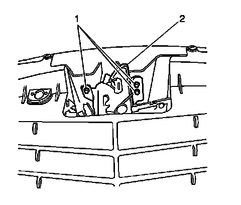
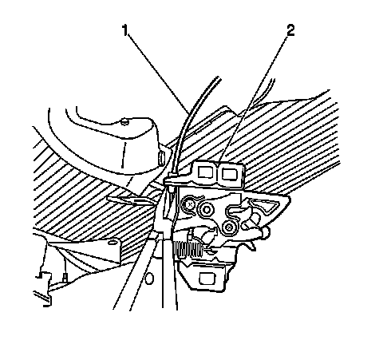

Hood Primary and Secondary Latch Replacement
Hood Primary and Secondary Latch Replacement
Removal Procedure

1. Remove the bolts (1) that secure the hood latch to the vehicle.

2. Disconnect the hood release cable (1) from the hood latch (2).
3. Disconnect the remote start electrical connector, if equipped.
4. Remove the hood latch (2) from the vehicle.
Installation Procedure
1. Connect the hood release cable (1) to the hood latch (2).
2. Position the hood latch (2) to the vehicle.
Notice: Refer to Fastener Notice (Fastener Notice) .
3. Install the bolts (1) to secure the hood latch to the vehicle.
Tighten the bolts to 9 N.m (80 lb in).
4. Connect the remote start electrical connector, if equipped.
5. Adjust the hood primary latch (2). Refer to Hood Latch Adjustment (Adjustments) .